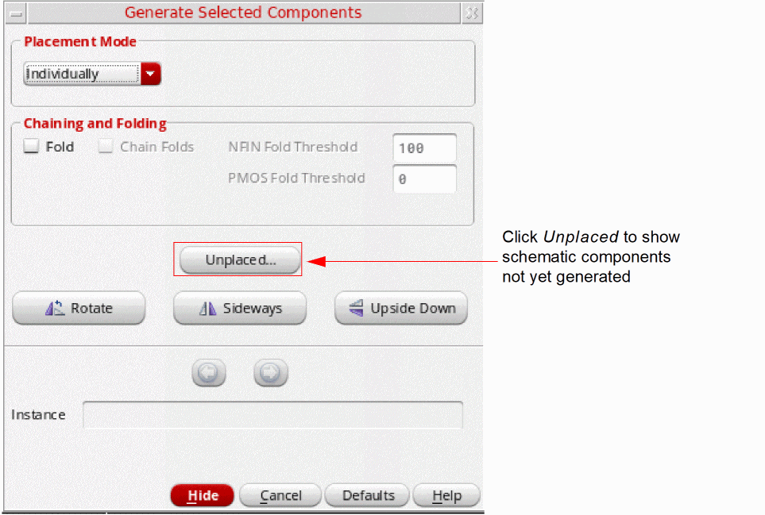
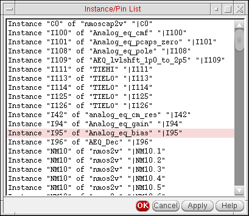

Listing Unplaced Components after Layout Generation
To see a list of all schematic components not yet generated in the layout view:
-
From the layout window menu bar, choose Connectivity – Generate – Selected From Source.
The Generate Selected Components form is displayed (or pressF3). -
Click Unplaced.
The Instance/Pin List form is displayed.
Wires, labels, text, instances with anignoreproperty, and instances that have already been placed in the layout are not considered available components and are not shown in the list. -
Choose one or more instances and pins in the list and click Apply.
The Generate Selected Components form changes to show the available information on the first component in the selected set.
Related Topics
Return to top